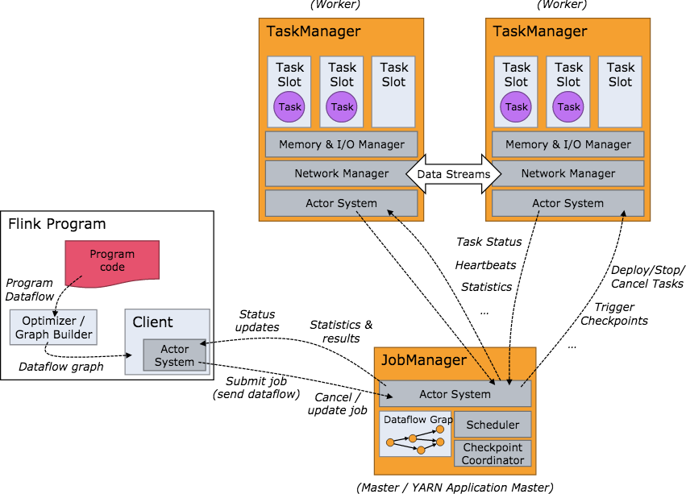

Flink 是一个针对流数据和批数据的分布式处理引擎。
Apache Flink是一个面向数据流处理和批量数据处理的可分布式的开源计算框架，它基于同一个Flink流式执行模型（streaming execution model），能够支持流处理和批处理两种应用类型。 由于流处理和批处理所提供的SLA(服务等级协议)是完全不相同， 流处理一般需要支持低延迟、Exactly-once保证，而批处理需要支持高吞吐、高效处理，所以在实现的时候通常是分别给出两套实现方法，或者通过一个独立的开源框架来实现其中每一种处理方案。

流处理特性
支持高吞吐、低延迟、高性能的流处理 支持带有事件时间的窗口（Window）操作 支持有状态计算的Exactly-once语义 支持高度灵活的窗口（Window）操作，支持基于time、count、session，以及data-driven的窗口操作 支持具有Backpressure功能的持续流模型 支持基于轻量级分布式快照（Snapshot）实现的容错 一个运行时同时支持Batch on Streaming处理和Streaming处理 Flink在JVM内部实现了自己的内存管理 支持迭代计算 支持程序自动优化：避免特定情况下Shuffle、排序等昂贵操作，中间结果有必要进行缓存
API支持
对Streaming数据类应用，提供DataStream API 对批处理类应用，提供DataSet API（支持Java/Scala）
Libraries支持
支持机器学习（FlinkML） 支持图分析（Gelly） 支持关系数据处理（Table） 支持复杂事件处理（CEP）
整合支持
支持Flink on YARN 支持HDFS 支持来自Kafka的输入数据 支持Apache HBase 支持Hadoop程序 支持Tachyon 支持ElasticSearch 支持RabbitMQ 支持Apache Storm 支持S3 支持XtreemFS
Flink起源于一个叫做Stratosphere的研究项目，目标是建立下一代大数据分析引擎，其在2014年4月16日成为Apache的孵化项目，从Stratosphere 0.6开始，正式更名为Flink。
Flink 0.7中介绍了最重要的特性：Streaming API。最初只支持Java API，后来增加了Scala API。